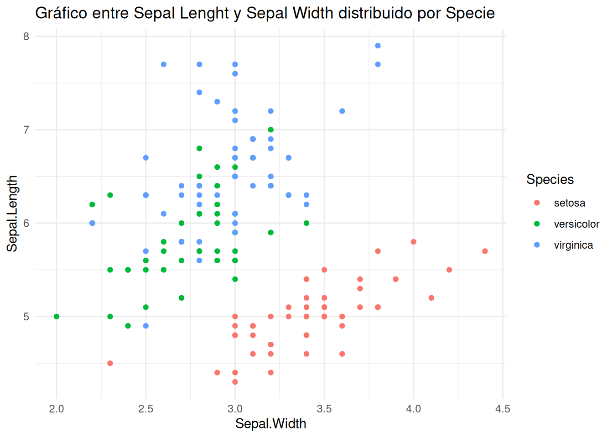
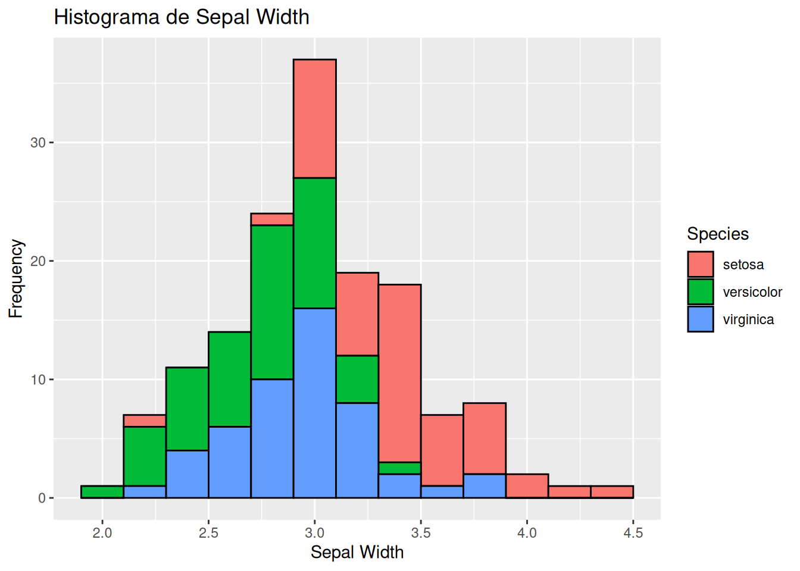
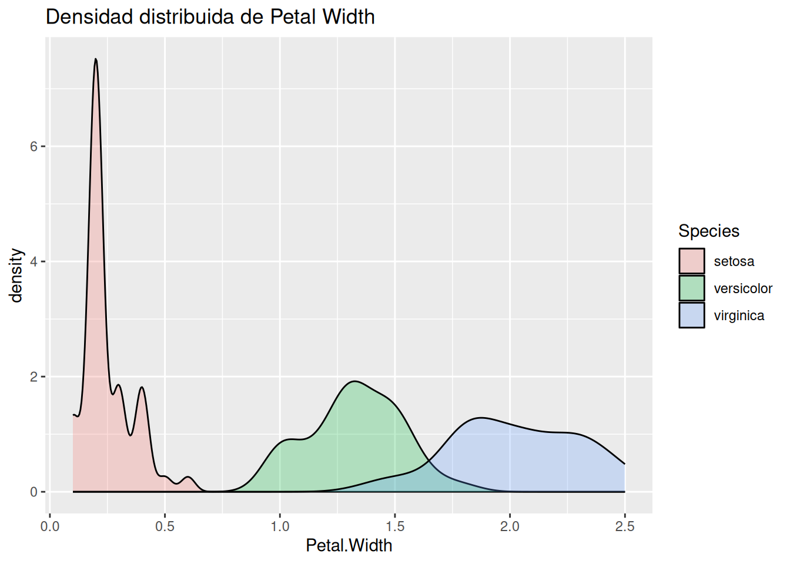
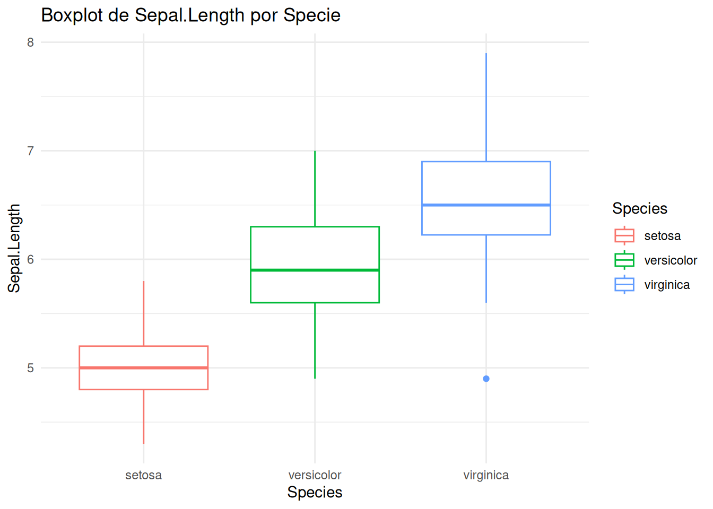
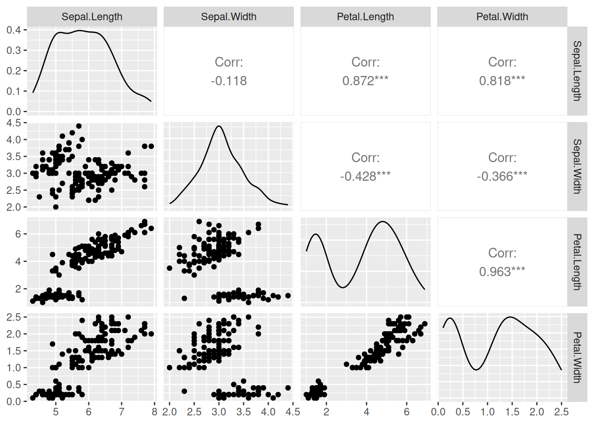
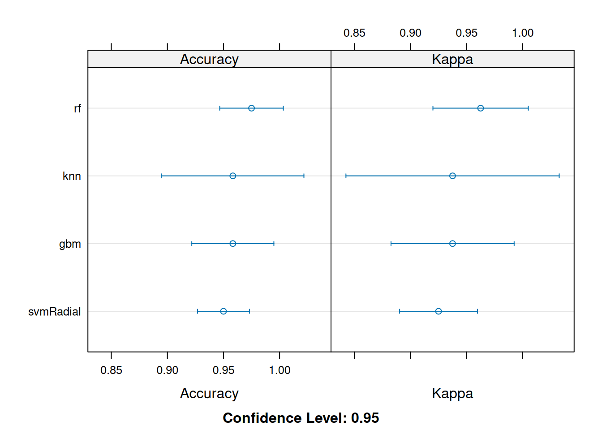
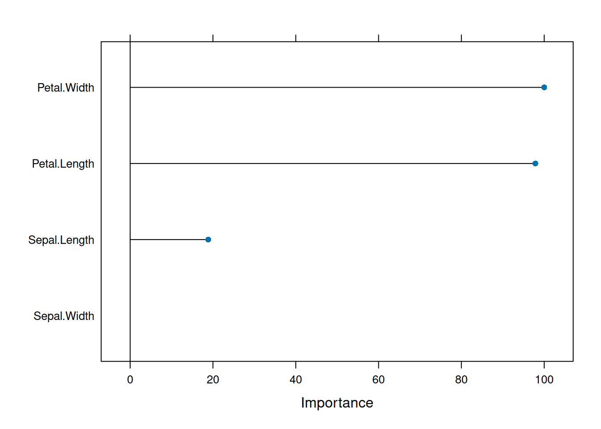

library(caret)
library(GGally) Dataset Iris
Analisis del dataset de iris
El dataset de iris (de Fisher o Anderson) proporciona las medidas en centímetros de la longitud y el ancho del sépalo y del pétalo, respectivamente, para 50 flores de cada una de las 3 especies de iris. Las especies son Iris setosa, versicolor y virginica.
Cargar las librerias y el dataset
Cargar el dataset dentro de la variable datos
data(iris)
datos = iris Información del dataset
dim(datos) [1] 150 5Tiene 150 observaciones con 5 variables
str(datos) 'data.frame': 150 obs. of 5 variables:
$ Sepal.Length: num 5.1 4.9 4.7 4.6 5 5.4 4.6 5 4.4 4.9 ...
$ Sepal.Width : num 3.5 3 3.2 3.1 3.6 3.9 3.4 3.4 2.9 3.1 ...
$ Petal.Length: num 1.4 1.4 1.3 1.5 1.4 1.7 1.4 1.5 1.4 1.5 ...
$ Petal.Width : num 0.2 0.2 0.2 0.2 0.2 0.4 0.3 0.2 0.2 0.1 ...
$ Species : Factor w/ 3 levels "setosa","versicolor",..: 1 1 1 1 1 1 1 1 1 1 ...Se observa que 4 variables son numericas, excepto Species que es categoria, es la variable a analizar
Resumen estadístico, la variable Species tiene 3 categorias distribuidas
summary(datos) Sepal.Length Sepal.Width Petal.Length Petal.Width
Min. :4.300 Min. :2.000 Min. :1.000 Min. :0.100
1st Qu.:5.100 1st Qu.:2.800 1st Qu.:1.600 1st Qu.:0.300
Median :5.800 Median :3.000 Median :4.350 Median :1.300
Mean :5.843 Mean :3.057 Mean :3.758 Mean :1.199
3rd Qu.:6.400 3rd Qu.:3.300 3rd Qu.:5.100 3rd Qu.:1.800
Max. :7.900 Max. :4.400 Max. :6.900 Max. :2.500
Species
setosa :50
versicolor:50
virginica :50
ggplot(data=datos,aes(x=Sepal.Width, y=Sepal.Length,color=Species)) +
geom_point() + theme_minimal() + ggtitle("Gráfico entre Sepal Lenght y Sepal Width distribuido por Specie") 
ggplot(data=datos, aes(x=Sepal.Width)) +
geom_histogram(binwidth=0.2, color="black", aes(fill=Species)) +
xlab("Sepal Width") + ylab("Frequency") + ggtitle("Histograma de Sepal Width") 
ggplot(datos) +
geom_density(aes(x = Petal.Width, fill = Species), alpha=0.25) +
ggtitle("Densidad distribuida de Petal Width") 
ggplot(data=datos,aes(x=Species, y=Sepal.Length,color=Species)) +
geom_boxplot() +theme_minimal()+
theme() + ggtitle("Boxplot de Sepal.Length por Specie")
Correlación y distribucíon de las variables numericas
ggpairs(datos[,1:4]) 
Existe una correlación alta entre Petal Length y Petal Width
Modelado
set.seed(123)
train <- createDataPartition(datos$Species, p = 0.8, list = FALSE)
trainData <- datos[train, ]
testData <- datos[-train, ] Se divide el dataset en 80% train y 20% test
preProcValues <- preProcess(trainData[,1:4], method = c("center", "scale"))
trainTransformed <- predict(preProcValues, trainData[, 1:4])
testTransformed <- predict(preProcValues, testData[, 1:4]) Se realiza un escalado y centrado de variables y disminuir la varianza de las variables
trainTransformed$Species <- trainData$Species
testTransformed$Species <- testData$Species Reconstruimos los datasets con la variable objetivo
set.seed(123)
ctrl <- trainControl(method = "cv", number = 5) Realizamos un cross-validation para evitar el sobreajuste
set.seed(123)
methods <- c("rf", "svmRadial", "knn", "gbm")Los modelos que se van a entrenar son: random forest, svmRadial, k-Nearest Neighbour y Generalized Boosted Models
models <- lapply(methods, function(m) {
train(Species ~ .,
data = trainTransformed,
method = m,
trControl = ctrl,
tuneLength = 3)}) Iter TrainDeviance ValidDeviance StepSize Improve
1 1.0986 -nan 0.1000 0.2819
2 0.9045 -nan 0.1000 0.1944
3 0.7669 -nan 0.1000 0.1632
4 0.6454 -nan 0.1000 0.1294
5 0.5552 -nan 0.1000 0.1057
6 0.4845 -nan 0.1000 0.0901
7 0.4219 -nan 0.1000 0.0661
8 0.3726 -nan 0.1000 0.0632
9 0.3267 -nan 0.1000 0.0397
10 0.2921 -nan 0.1000 0.0385
20 0.1212 -nan 0.1000 0.0049
40 0.0558 -nan 0.1000 -0.0062
60 0.0373 -nan 0.1000 -0.0114
80 0.0266 -nan 0.1000 -0.0015
100 0.0186 -nan 0.1000 -0.0014
120 0.0160 -nan 0.1000 -0.0022
140 0.0085 -nan 0.1000 0.0005
150 0.0064 -nan 0.1000 -0.0013
Iter TrainDeviance ValidDeviance StepSize Improve
1 1.0986 -nan 0.1000 0.3863
2 0.8479 -nan 0.1000 0.2362
3 0.6854 -nan 0.1000 0.1921
4 0.5556 -nan 0.1000 0.1408
5 0.4567 -nan 0.1000 0.1102
6 0.3867 -nan 0.1000 0.0913
7 0.3235 -nan 0.1000 0.0673
8 0.2771 -nan 0.1000 0.0543
9 0.2393 -nan 0.1000 0.0418
10 0.2094 -nan 0.1000 0.0311
20 0.0811 -nan 0.1000 -0.0043
40 0.0329 -nan 0.1000 -0.0074
60 0.0191 -nan 0.1000 -0.0014
80 0.0084 -nan 0.1000 -0.0016
100 0.0066 -nan 0.1000 -0.0005
120 0.0048 -nan 0.1000 -0.0007
140 0.0031 -nan 0.1000 -0.0008
150 0.0036 -nan 0.1000 0.0009
Iter TrainDeviance ValidDeviance StepSize Improve
1 1.0986 -nan 0.1000 0.3371
2 0.8577 -nan 0.1000 0.1736
3 0.7203 -nan 0.1000 0.2120
4 0.5793 -nan 0.1000 0.1490
5 0.4778 -nan 0.1000 0.1021
6 0.3977 -nan 0.1000 0.0621
7 0.3488 -nan 0.1000 0.0844
8 0.2931 -nan 0.1000 0.0555
9 0.2512 -nan 0.1000 0.0439
10 0.2225 -nan 0.1000 0.0396
20 0.0773 -nan 0.1000 -0.0027
40 0.0321 -nan 0.1000 -0.0053
60 0.0189 -nan 0.1000 -0.0056
80 0.0102 -nan 0.1000 -0.0010
100 0.0079 -nan 0.1000 0.0000
120 0.0043 -nan 0.1000 -0.0012
140 0.0035 -nan 0.1000 -0.0002
150 0.0025 -nan 0.1000 -0.0006
Iter TrainDeviance ValidDeviance StepSize Improve
1 1.0986 -nan 0.1000 0.2701
2 0.9007 -nan 0.1000 0.2149
3 0.7505 -nan 0.1000 0.1610
4 0.6336 -nan 0.1000 0.1372
5 0.5398 -nan 0.1000 0.1046
6 0.4675 -nan 0.1000 0.0900
7 0.4039 -nan 0.1000 0.0710
8 0.3524 -nan 0.1000 0.0595
9 0.3107 -nan 0.1000 0.0553
10 0.2742 -nan 0.1000 0.0337
20 0.0976 -nan 0.1000 0.0092
40 0.0328 -nan 0.1000 -0.0002
60 0.0180 -nan 0.1000 -0.0013
80 0.0153 -nan 0.1000 0.0031
100 0.0086 -nan 0.1000 -0.0000
120 0.0070 -nan 0.1000 -0.0010
140 0.0045 -nan 0.1000 0.0005
150 0.0046 -nan 0.1000 -0.0020
Iter TrainDeviance ValidDeviance StepSize Improve
1 1.0986 -nan 0.1000 0.3049
2 0.8981 -nan 0.1000 0.2934
3 0.7084 -nan 0.1000 0.2216
4 0.5594 -nan 0.1000 0.1525
5 0.4532 -nan 0.1000 0.1278
6 0.3724 -nan 0.1000 0.0720
7 0.3218 -nan 0.1000 0.0679
8 0.2701 -nan 0.1000 0.0478
9 0.2289 -nan 0.1000 0.0530
10 0.1943 -nan 0.1000 0.0361
20 0.0550 -nan 0.1000 0.0024
40 0.0233 -nan 0.1000 -0.0075
60 0.0075 -nan 0.1000 -0.0014
80 0.0048 -nan 0.1000 -0.0020
100 0.0043 -nan 0.1000 -0.0009
120 0.0023 -nan 0.1000 -0.0005
140 0.0044 -nan 0.1000 -0.0024
150 0.0017 -nan 0.1000 -0.0001
Iter TrainDeviance ValidDeviance StepSize Improve
1 1.0986 -nan 0.1000 0.4043
2 0.8441 -nan 0.1000 0.2732
3 0.6682 -nan 0.1000 0.1758
4 0.5397 -nan 0.1000 0.1437
5 0.4396 -nan 0.1000 0.1234
6 0.3603 -nan 0.1000 0.0891
7 0.3000 -nan 0.1000 0.0704
8 0.2547 -nan 0.1000 0.0438
9 0.2206 -nan 0.1000 0.0451
10 0.1872 -nan 0.1000 0.0315
20 0.0557 -nan 0.1000 -0.0028
40 0.0196 -nan 0.1000 -0.0027
60 0.0102 -nan 0.1000 0.0015
80 0.0034 -nan 0.1000 -0.0008
100 0.0026 -nan 0.1000 -0.0012
120 0.0055 -nan 0.1000 -0.0002
140 0.0024 -nan 0.1000 -0.0010
150 0.0030 -nan 0.1000 -0.0008
Iter TrainDeviance ValidDeviance StepSize Improve
1 1.0986 -nan 0.1000 0.2917
2 0.9100 -nan 0.1000 0.1953
3 0.7653 -nan 0.1000 0.1660
4 0.6527 -nan 0.1000 0.1216
5 0.5571 -nan 0.1000 0.1084
6 0.4836 -nan 0.1000 0.0834
7 0.4234 -nan 0.1000 0.0769
8 0.3652 -nan 0.1000 0.0650
9 0.3202 -nan 0.1000 0.0535
10 0.2816 -nan 0.1000 0.0418
20 0.1045 -nan 0.1000 0.0056
40 0.0307 -nan 0.1000 -0.0009
60 0.0132 -nan 0.1000 -0.0018
80 0.0078 -nan 0.1000 -0.0016
100 0.0044 -nan 0.1000 -0.0009
120 0.0028 -nan 0.1000 -0.0009
140 0.0019 -nan 0.1000 -0.0004
150 0.0016 -nan 0.1000 0.0000
Iter TrainDeviance ValidDeviance StepSize Improve
1 1.0986 -nan 0.1000 0.3907
2 0.8429 -nan 0.1000 0.2709
3 0.6693 -nan 0.1000 0.1874
4 0.5460 -nan 0.1000 0.1490
5 0.4461 -nan 0.1000 0.1171
6 0.3694 -nan 0.1000 0.0817
7 0.3084 -nan 0.1000 0.0653
8 0.2621 -nan 0.1000 0.0368
9 0.2313 -nan 0.1000 0.0388
10 0.1973 -nan 0.1000 0.0255
20 0.0658 -nan 0.1000 0.0018
40 0.0211 -nan 0.1000 -0.0051
60 0.0100 -nan 0.1000 -0.0006
80 0.0054 -nan 0.1000 -0.0018
100 0.0036 -nan 0.1000 -0.0008
120 0.0018 -nan 0.1000 -0.0005
140 0.0009 -nan 0.1000 -0.0003
150 0.0010 -nan 0.1000 -0.0003
Iter TrainDeviance ValidDeviance StepSize Improve
1 1.0986 -nan 0.1000 0.3792
2 0.8543 -nan 0.1000 0.2861
3 0.6755 -nan 0.1000 0.1860
4 0.5480 -nan 0.1000 0.1077
5 0.4683 -nan 0.1000 0.1293
6 0.3789 -nan 0.1000 0.0698
7 0.3247 -nan 0.1000 0.0659
8 0.2790 -nan 0.1000 0.0639
9 0.2383 -nan 0.1000 0.0533
10 0.2045 -nan 0.1000 0.0416
20 0.0669 -nan 0.1000 -0.0062
40 0.0216 -nan 0.1000 -0.0048
60 0.0086 -nan 0.1000 -0.0019
80 0.0038 -nan 0.1000 -0.0003
100 0.0017 -nan 0.1000 -0.0001
120 0.0009 -nan 0.1000 -0.0002
140 0.0005 -nan 0.1000 -0.0001
150 0.0004 -nan 0.1000 -0.0000
Iter TrainDeviance ValidDeviance StepSize Improve
1 1.0986 -nan 0.1000 0.2919
2 0.8982 -nan 0.1000 0.2070
3 0.7486 -nan 0.1000 0.1778
4 0.6277 -nan 0.1000 0.1337
5 0.5346 -nan 0.1000 0.1108
6 0.4559 -nan 0.1000 0.0926
7 0.3932 -nan 0.1000 0.0744
8 0.3404 -nan 0.1000 0.0649
9 0.2955 -nan 0.1000 0.0502
10 0.2597 -nan 0.1000 0.0472
20 0.0808 -nan 0.1000 0.0123
40 0.0156 -nan 0.1000 -0.0007
60 0.0049 -nan 0.1000 0.0006
80 0.0024 -nan 0.1000 -0.0003
100 0.0011 -nan 0.1000 0.0001
120 0.0005 -nan 0.1000 -0.0000
140 0.0003 -nan 0.1000 0.0000
150 0.0002 -nan 0.1000 -0.0000
Iter TrainDeviance ValidDeviance StepSize Improve
1 1.0986 -nan 0.1000 0.3109
2 0.8801 -nan 0.1000 0.2917
3 0.6836 -nan 0.1000 0.2120
4 0.5433 -nan 0.1000 0.1511
5 0.4410 -nan 0.1000 0.1141
6 0.3607 -nan 0.1000 0.0905
7 0.2962 -nan 0.1000 0.0702
8 0.2474 -nan 0.1000 0.0549
9 0.2052 -nan 0.1000 0.0470
10 0.1716 -nan 0.1000 0.0363
20 0.0415 -nan 0.1000 0.0017
40 0.0066 -nan 0.1000 -0.0009
60 0.0021 -nan 0.1000 0.0001
80 0.0007 -nan 0.1000 -0.0001
100 0.0003 -nan 0.1000 -0.0001
120 0.0001 -nan 0.1000 -0.0000
140 0.0001 -nan 0.1000 -0.0000
150 0.0000 -nan 0.1000 -0.0000
Iter TrainDeviance ValidDeviance StepSize Improve
1 1.0986 -nan 0.1000 0.2641
2 0.8942 -nan 0.1000 0.3135
3 0.6976 -nan 0.1000 0.2142
4 0.5509 -nan 0.1000 0.1557
5 0.4433 -nan 0.1000 0.0825
6 0.3806 -nan 0.1000 0.0998
7 0.3146 -nan 0.1000 0.0726
8 0.2580 -nan 0.1000 0.0509
9 0.2166 -nan 0.1000 0.0535
10 0.1823 -nan 0.1000 0.0367
20 0.0489 -nan 0.1000 0.0098
40 0.0116 -nan 0.1000 -0.0042
60 0.0042 -nan 0.1000 -0.0010
80 0.0032 -nan 0.1000 -0.0008
100 0.0028 -nan 0.1000 -0.0008
120 0.0033 -nan 0.1000 -0.0004
140 0.0017 -nan 0.1000 -0.0003
150 0.0012 -nan 0.1000 -0.0002
Iter TrainDeviance ValidDeviance StepSize Improve
1 1.0986 -nan 0.1000 0.2878
2 0.8979 -nan 0.1000 0.1986
3 0.7505 -nan 0.1000 0.1575
4 0.6372 -nan 0.1000 0.1219
5 0.5550 -nan 0.1000 0.1002
6 0.4768 -nan 0.1000 0.0664
7 0.4121 -nan 0.1000 0.0741
8 0.3580 -nan 0.1000 0.0597
9 0.3184 -nan 0.1000 0.0558
10 0.2828 -nan 0.1000 0.0432
20 0.1116 -nan 0.1000 0.0054
40 0.0461 -nan 0.1000 0.0008
60 0.0251 -nan 0.1000 -0.0032
80 0.0149 -nan 0.1000 -0.0024
100 0.0128 -nan 0.1000 -0.0026
120 0.0083 -nan 0.1000 -0.0013
140 0.0042 -nan 0.1000 -0.0008
150 0.0039 -nan 0.1000 -0.0010
Iter TrainDeviance ValidDeviance StepSize Improve
1 1.0986 -nan 0.1000 0.3846
2 0.8554 -nan 0.1000 0.1914
3 0.7160 -nan 0.1000 0.1477
4 0.6091 -nan 0.1000 0.1698
5 0.4930 -nan 0.1000 0.1181
6 0.4099 -nan 0.1000 0.0950
7 0.3465 -nan 0.1000 0.0677
8 0.2943 -nan 0.1000 0.0635
9 0.2529 -nan 0.1000 0.0274
10 0.2230 -nan 0.1000 0.0386
20 0.0896 -nan 0.1000 0.0082
40 0.0243 -nan 0.1000 0.0006
60 0.0136 -nan 0.1000 -0.0024
80 0.0087 -nan 0.1000 -0.0011
100 0.0026 -nan 0.1000 -0.0003
120 0.0010 -nan 0.1000 -0.0000
140 0.0006 -nan 0.1000 -0.0002
150 0.0004 -nan 0.1000 -0.0001
Iter TrainDeviance ValidDeviance StepSize Improve
1 1.0986 -nan 0.1000 0.3655
2 0.8520 -nan 0.1000 0.2548
3 0.6852 -nan 0.1000 0.1707
4 0.5612 -nan 0.1000 0.1614
5 0.4562 -nan 0.1000 0.1134
6 0.3832 -nan 0.1000 0.0902
7 0.3180 -nan 0.1000 0.0710
8 0.2674 -nan 0.1000 0.0469
9 0.2270 -nan 0.1000 0.0413
10 0.1963 -nan 0.1000 0.0367
20 0.0756 -nan 0.1000 -0.0011
40 0.0280 -nan 0.1000 -0.0029
60 0.0095 -nan 0.1000 -0.0006
80 0.0054 -nan 0.1000 -0.0019
100 0.0031 -nan 0.1000 0.0000
120 0.0013 -nan 0.1000 -0.0001
140 0.0009 -nan 0.1000 -0.0003
150 0.0008 -nan 0.1000 0.0000
Iter TrainDeviance ValidDeviance StepSize Improve
1 1.0986 -nan 0.1000 0.2649
2 0.9022 -nan 0.1000 0.2098
3 0.7622 -nan 0.1000 0.1729
4 0.6382 -nan 0.1000 0.1301
5 0.5465 -nan 0.1000 0.1152
6 0.4721 -nan 0.1000 0.0764
7 0.4132 -nan 0.1000 0.0736
8 0.3606 -nan 0.1000 0.0652
9 0.3179 -nan 0.1000 0.0495
10 0.2815 -nan 0.1000 0.0376
20 0.1116 -nan 0.1000 0.0081
40 0.0484 -nan 0.1000 -0.0014
50 0.0319 -nan 0.1000 -0.0016Se entreno el modelo, con los 4 modelos mas utilizados
names(models) <- methods
results <- resamples(models)
summary(results)
Call:
summary.resamples(object = results)
Models: rf, svmRadial, knn, gbm
Number of resamples: 5
Accuracy
Min. 1st Qu. Median Mean 3rd Qu. Max. NA's
rf 0.9583333 0.9583333 0.9583333 0.9750000 1.0000000 1.0000000 0
svmRadial 0.9166667 0.9583333 0.9583333 0.9500000 0.9583333 0.9583333 0
knn 0.8750000 0.9583333 0.9583333 0.9583333 1.0000000 1.0000000 0
gbm 0.9166667 0.9583333 0.9583333 0.9583333 0.9583333 1.0000000 0
Kappa
Min. 1st Qu. Median Mean 3rd Qu. Max. NA's
rf 0.9375 0.9375 0.9375 0.9625 1.0000 1.0000 0
svmRadial 0.8750 0.9375 0.9375 0.9250 0.9375 0.9375 0
knn 0.8125 0.9375 0.9375 0.9375 1.0000 1.0000 0
gbm 0.8750 0.9375 0.9375 0.9375 0.9375 1.0000 0Resumen estadístico del Accuracy y Kappa de cada modelo.
dotplot(results)
Como se observa en la gráfica, rf tiene mayor Accuracy y Kappa.
best_model <- models[["rf"]]
predictions <- predict(best_model, newdata = testTransformed)
confusionMatrix(predictions, testTransformed$Species)Confusion Matrix and Statistics
Reference
Prediction setosa versicolor virginica
setosa 10 0 0
versicolor 0 10 2
virginica 0 0 8
Overall Statistics
Accuracy : 0.9333
95% CI : (0.7793, 0.9918)
No Information Rate : 0.3333
P-Value [Acc > NIR] : 8.747e-12
Kappa : 0.9
Mcnemar's Test P-Value : NA
Statistics by Class:
Class: setosa Class: versicolor Class: virginica
Sensitivity 1.0000 1.0000 0.8000
Specificity 1.0000 0.9000 1.0000
Pos Pred Value 1.0000 0.8333 1.0000
Neg Pred Value 1.0000 1.0000 0.9091
Prevalence 0.3333 0.3333 0.3333
Detection Rate 0.3333 0.3333 0.2667
Detection Prevalence 0.3333 0.4000 0.2667
Balanced Accuracy 1.0000 0.9500 0.9000En los datos de prueba, se obtuvo excelentes resultados a la hora de clasificar las diferentes Species. Con un 93.3% de Accuracy y 90% de Kappa
importance <- varImp(best_model, scale = TRUE)
plot(importance)
Las variables mas importantes son Petal Width y Petal Length